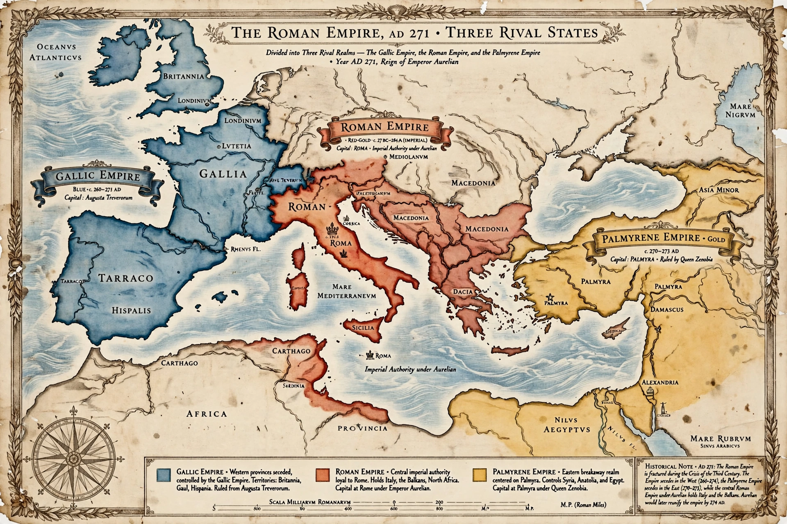

| Crisis of the Third Century | |
|---|---|
| Date | AD 235–284 |
| Location | Roman Empire |
| Triggers | Assassination of Severus Alexander; military anarchy; plague; invasion; currency debasement |
| Result | Empire fragmented into Roman, Gallic, and Palmyrene states; reunified by Aurelian; reforms of Diocletian |

The Crisis of the Third Century, also known as the Military Anarchy or the Imperial Crisis, was a period from AD 235 to 284 in which the Roman Empire nearly collapsed under the combined pressures of civil war, foreign invasion, plague, secession, and economic disintegration. Between the assassination of the emperor Severus Alexander in 235 and the accession of Diocletian in 284, the empire saw more than twenty recognized emperors and scores of usurpers, most of whom died violently.
The Severan dynasty had militarized the monarchy, buying the army's loyalty with pay rises financed by debasing the silver coinage. After 235, frontier armies made and unmade emperors at will. Simultaneously the external situation worsened: the aggressive new Sasanian Empire in Persia shattered Roman armies in the east, capturing the emperor Valerian himself at Edessa in 260 — an unprecedented humiliation — while Gothic and Alamannic confederations broke across the Rhine and Danube, raiding as far as Greece, Spain, and Anatolia. The Plague of Cyprian (c. 249–262) added demographic and economic shock. Trade networks contracted, cities shrank behind new walls, and the antoninianus collapsed into a bronze token coinage, producing severe inflation.
The empire fragmented into three rival states. In the west, the general Postumus founded the Gallic Empire (260–274), ruling Gaul, Britain, and (for a time) Spain with its own senate and consuls. In the east, Odaenathus of Palmyra first defended the frontier as Rome's ally; after his assassination his widow Zenobia built a Palmyrene Empire (270–272) that seized Egypt and much of Asia Minor.
Recovery began with the "Illyrian" soldier-emperors. Claudius II Gothicus crushed the Goths at Naissus (268/269). His successor Aurelian (270–275), rightly surnamed Restitutor Orbis ("Restorer of the World"), built Rome's new circuit of walls, defeated Zenobia and recaptured the east, then accepted the submission of the Gallic emperor Tetricus, reuniting the empire before his assassination in 275. Probus and Carus consolidated the frontiers. The crisis is conventionally closed by Diocletian (from 284), whose sweeping reforms — the Tetrarchy, restructured taxation, a rebuilt army, price controls, and a reformed currency — transformed the Principate into the more authoritarian Dominate.
Historians debate whether the "crisis" was an empire-wide collapse or a rapid, if brutal, adaptation: some regions prospered, the armies that produced usurpers also defended the frontiers, and the empire that emerged was administratively stronger in some respects. What is clear is that after 284 the Roman state was permanently changed — more militarized, more bureaucratic, and ruled from frontier capitals rather than from Rome.